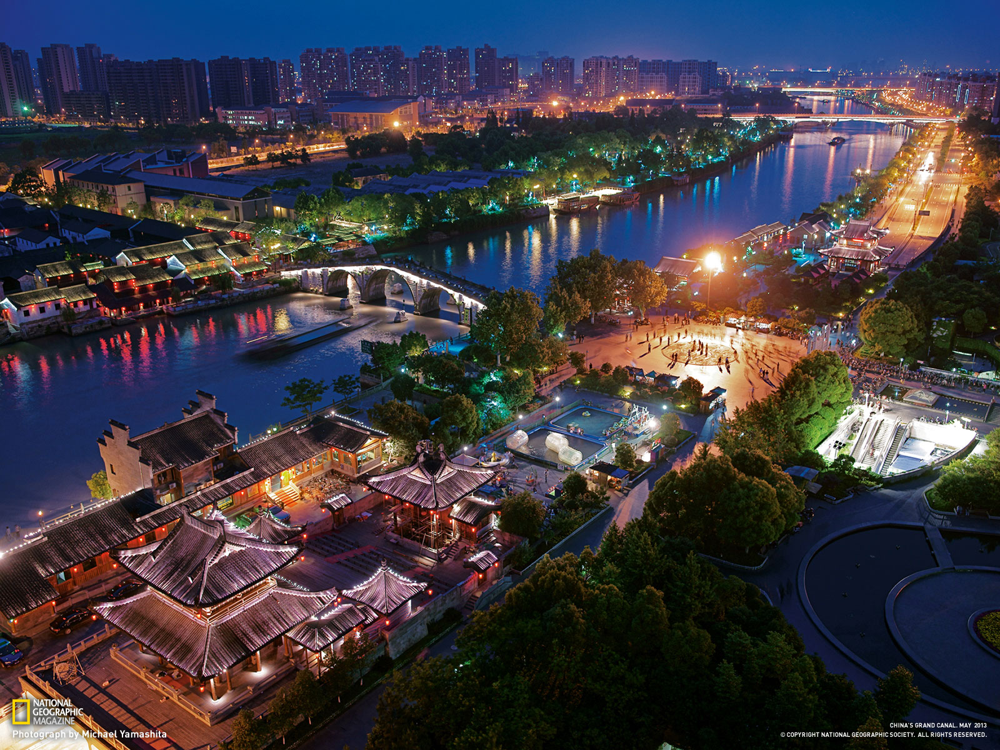

The name of my hometown is Hangzhou, which is near the east coast of China.
I was born and raised there, although I have a lot of experience staying in other cities, I still cannot find a
second place that can provide better life I had in Hangzhou.
The city can look very cool

But it can also turn to a cozy place to live (and I love this side of my hometown more):
By far, it is still my first choice for retiring.